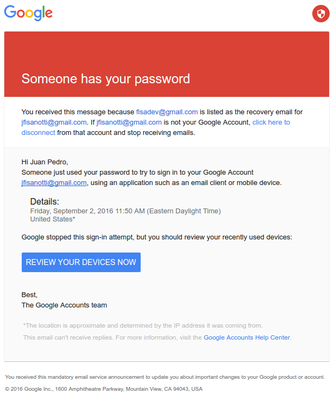
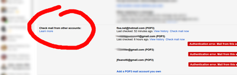

Suspicious logins
The "interesting" story
Imagine having a main gmail account, and a handfull of extra accounts (to reserve names, to test some api stuff, etc).
Imagine not having used those extra accounts in years. And even more: not having used them ever. Not a single email sent, not a single external app connected to them, not any login to other sites, etc.
One day you decide to start using a password manager. And an open source one, which stores the data encrypted using gpg. You even create a new gpg key to encrypt them, to be sure it's safe. You sync your encrypted data into an online private git repo, because nobody could decrypt the data anyway.
Two days later, you receive an email from google:
{kind=link}
PANIC
(worth mentioning: I'm from Argentina, the access was from the US)
After some investigation, you discover:
- You were reusing the password from that account.
- The way you were using the password manager, the account names weren't encrypted (the passwords were, of course).
- By reusing it, the encrypted data is the same in all encrypted files.
- You never used the account, but it has your name on it, easily guessable account name.
Conclussion: someone who has your password from another (unsafe?) service, could have either guessed your secondary account name, or gained access to the encrypted data, which has the account names in clear text. By just comparing encrypted contents, not even decrypting them, that person could have known in which other sites the leaked password could work.
Ok, you now think you know, you just need to change passwords on all those sites, and never ever reuse passwords again. But oh no, you know nothing. After doing it, a few days later...
Email: Someone has your password.
Again! But this time from a different account: not that one which was easily guessable and which shared the password with other sites. No. This time? An account you didn't even write down the name, not in your password manager, nor anywhere outside google itself. The password was written down in your password manager, in clear text, because you were a little clumsy and confused "user" with "password". But then again, you never wrote down the account name outside google, ever.
How could someone have gained access to that account? How in hell can someone know you own that account, and he can use that "username" as password for it?
You start to recall... There is only one place were you have references to that account: old emails you received in your inbox, when you created the account. Your inbox.
Think about it: Google is telling you "hey, someone knows your account and password", and you know that the account name was only present in old emails at your inbox, while the password was only written down in your trusty new password manager.
{kind=link}
NSA, is that you? Or a random hacker who really wants to steal my data? What valuable data can I have? Hell, I need to get everyone to revoke my credentials everywhere, now.
The "boring" story
But no. There is always a boring explanation, something simpler, that doesn't look like a CSI Cyber episode. In this case? something that looks like a bug on some internal Google services.
I discovered this almost by chance, while writting down a super comprehensive explanation of the things I was seeing (a 5x longer version of the interesting story). I realized I had both accounts added to my main email account, using gmail's feature to access emails from multiple sources. This feature:
{kind=link}
I thought: "oh! I forgot to update those settings after changing the passwords". And so I opened gmail, went to the settings, and saw the big red errors telling me that gmail wasn't able to connect to those accounts. Which was to be expected, as I changed the passwords. But something clicked inside my head: since when is gmail unable to check those accounts? what was the error?...
And there it was, the boring truth in all its boringness: gmail wasn't able to access the accounts from the exact same moment the "suspicious logins" happened.
Some might think "oh, that's to be expected as well. Google must have blocked the account as soon as the security incident was detected". But no. This feature doesn't check email every second. For my accounts, it's doing it once every day, more or less. And the failed attempt was at the exact same time the "suspicious login" happened. In both accounts. Different times each one. Too much coincidence.
I wasn't able to see the original error for one of the accounts, too many login errors since it because of the password change, and it only stores the last 5 of them. But for the other account the first error was still there, and it was different to the password related ones.
The errors after the password changes were:
Authentication error. Server returned error "[AUTH] Username and password not accepted."
But the error at the same time than the suspicious login was:
Authentication error. Server returned error "[AUTH] Web login required: https://support.google.com/mail/answer/78754"
The linked support page isn't very helpful, but if you google the error you will find some people having the same issue: after years of not using an account, the login on their pop3 client starts to fail. Maybe something changed in google's security policies, maybe it's related to new terms of service, or required security checkups. But the thing is: logins fail until you login from a browser and tweak some stuff (enabling less secure apps, etc).
That itself isn't the bug. The bug is flagging those pop3 logins which came from inside google (it's a gmail feature, running on their servers), as if they were "suspicious logins". They are not suspicious, they are comming from inside google, they are being made from a google server trying to execute a gmail feature.
Finally, how sure am I that the logins came from inside google? Well, a traceroute to the login ip took me to this host: mail-pa0-x218.google.com.
So yes, I'm pretty sure this was a bug. But by Cthulhu's beard, I'm happy this was a bug.
In short
A gmail server tries to login to a gmail account for a gmail feature to work, and the user gets a big red email: "someone has your password". Yes, google, someone has my password. It's you.
Comments
Comments powered by Disqus